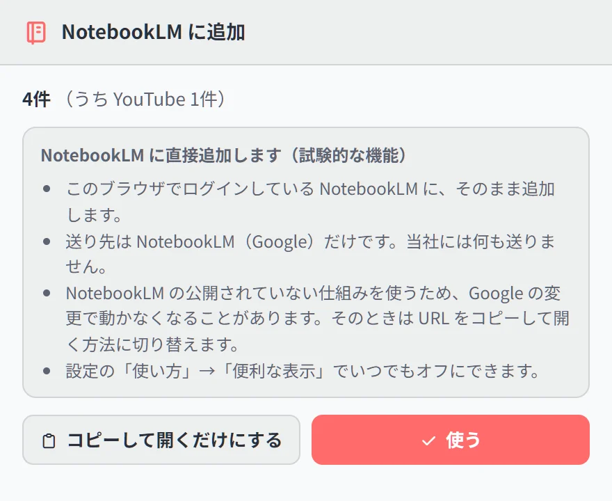
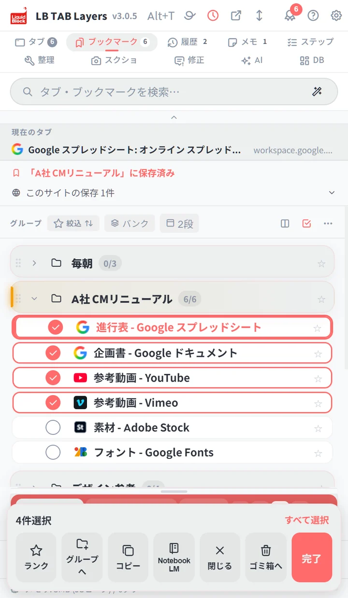

タブを選んで、下のバーの「NotebookLM」を押します。送り先を選ぶ小窓が開くので、ノートブックを選ぶか、新しく作ります。選んだページが、そのノートブックのソースにまとめて入ります。開いているタブでも、保存してあるタブでも送れます。
📌 下のバーの「NotebookLM」ボタンは 3.0.5 からです。それより前の版では、選んだあと「コピー」→「NotebookLM に送る」で同じことができます。NotebookLM へ直接追加する機能は試験的なもので、PRO の機能です（お試しの90日間は使えます）。
調べものをしていると、タブが10個、20個と開きます。それを NotebookLM にまとめて読ませたい。でも、ソースの追加は、URL を1つずつ貼る作業になります。開いているタブを、そのままノートブックに入れたい。そのための機能です。
手順：選んで、押して、送り先を決める
- サイドパネルの上の選択のボタン（チェックの形）を押します。タブの行を長押ししても始まります
- 送りたいタブを押して選びます。「すべて選択」もあります
- 下のバーの「NotebookLM」を押します
- 小窓で、送り先のノートブックを選びます。新しく作ることもできます

追加が終わると、何件入ったかが出ます。「NotebookLM で開く」を押すと、そのノートブックが開きます。
はじめて使うとき
はじめての1回だけ、小窓に説明が出ます。何をどこへ送るのかを、先に確かめられます。
- このブラウザでログインしている NotebookLM に、そのまま追加します
- 送り先は NotebookLM（Google）だけです。当社には何も送りません
- NotebookLM の公開されていない仕組みを使うため、Google の変更で動かなくなることがあります
「使う」を押すと、次からは説明なしで送り先を選べます。「コピーして開くだけにする」を選ぶと、URL をまとめてコピーして NotebookLM を開きます。この場合は、NotebookLM の「ソースを追加」に自分で貼り付けます。
ほかの入り口
| 送りたいもの | 操作 |
|---|---|
| 選んだタブ（開いているもの・保存したもの） | 選択 → 下のバーの「NotebookLM」 |
| グループまるごと | グループを右クリック →「NotebookLM に送る」 |
| いま見ているページ、またはリンク | ページやリンクを右クリック →「NotebookLM に追加」 |
| YouTube のページに並んでいる動画 | YouTube のページを右クリック →「このページの動画の URL をまとめてコピー（NotebookLM へ）」 |
YouTube の再生リストや検索結果のページでは、並んでいる動画の URL をまとめて集められます。
うまく入らないとき
- 「ログインしていないようです」と出る：NotebookLM を開いてログインしてから、もう一度押します
- 「上限に達したようです」と出る：ノートブックの数や、ソースの数の上限です。NotebookLM の画面で確かめてください
- 何件かが追加できなかった：会員限定のページなど、NotebookLM が読めないページは入りません
- つながらない：NotebookLM の作りが変わった可能性があります。「URL をコピーして NotebookLM を開く」に切り替えて追加できます
【実体験】前からあったのに、見つけられなかった
この機能は、じつは前の版から入っていました。置いてあったのは、選択モードの「コピー」の中です。ところが、作った本人が「選んだタブを NotebookLM に流し込める機能がほしい」と言いました。あるのに、見つからなかったのです。それで 3.0.5 から、下のバーに専用のボタンとして出しました。機能があることと、使えることは別だと学んだ出来事でした。
知っておきたいこと
- 送れるのは、http・https のページです。Chrome の設定画面や、拡張機能の画面は入りません
- 同じ URL は1つにまとめて送ります
- オフにする：設定の「使い方」→「便利な表示」で、直接追加をいつでもオフにできます
- プラン：PRO の機能です。お試しの90日間はすべて使えます
RSS のニュースを NotebookLM で聞く使い方は、「あとで読む」が積読になる人へで紹介しています。
🎬 NotebookLM に送るほかにも、いろいろできます。パネルを開く、保存したタブを開く、閉じたタブを履歴から戻す、ページにひもづけたメモ、ピンバーまで。ブラウザとパネルの動きをそのまま見られる 操作ガイド（動く画面で見る10の操作） にまとめています。入れたばかりの方は クイックチュートリアル（5分） からどうぞ。
よくある質問
Q. 開いているタブを、NotebookLM にまとめて追加できますか？
できます。LB TAB Layers でタブを選んで、下のバーの「NotebookLM」を押すと、送り先のノートブックを選べます。選んだページが、ソースにまとめて入ります。
Q. 送ったページの情報は、どこに送られますか？
送り先は NotebookLM（Google）だけです。このブラウザでログインしている NotebookLM に直接追加し、当社のサーバーは通りません。
Q. YouTube の動画も、まとめて追加できますか？
できます。YouTube の再生リストや検索結果のページを右クリックして「このページの動画の URL をまとめてコピー（NotebookLM へ）」を選ぶと、並んでいる動画の URL を集められます。
Q. 直接追加がうまくいかないときは？
「URL をコピーして NotebookLM を開く」に切り替えられます。URL がまとめてコピーされるので、NotebookLM の「ソースを追加」に貼り付けます。
Q. 無料で使えますか？
PRO の機能です。インストールから90日間は、すべての機能を無料で試せます。
▶ 実際の操作を動画で見る
サイドバーで、ブックマークとタブをいっしょに管理する様子です。